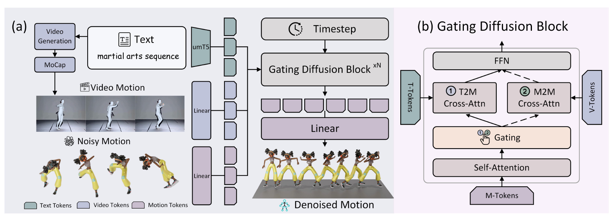
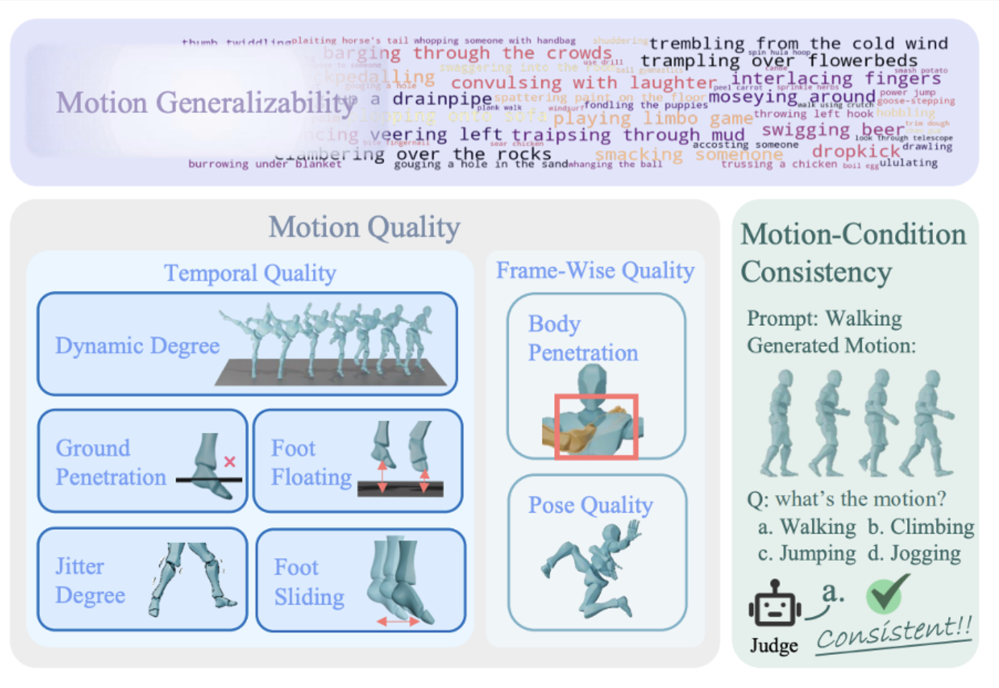
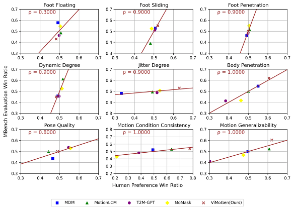
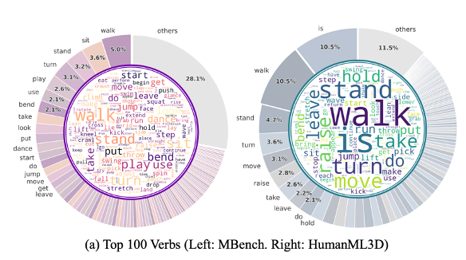

Despite recent advances in 3D human motion generation (MoGen) on standard benchmarks, existing text-to-motion models still face a fundamental bottleneck in their generalization capability. In contrast, adjacent generative fields, most notably video generation (ViGen), have demonstrated remarkable generalization in modeling human behaviors. Motivated by this observation, we present a comprehensive framework that systematically transfers knowledge from ViGen to MoGen across three key pillars: Data, Model, and Evaluation.
First, we introduce ViMoGen-228K, a large-scale dataset comprising 228,000 high-quality motion samples. Second, we propose ViMoGen, a flow-matching-based diffusion transformer that unifies priors from MoCap data and ViGen models through gated multimodal conditioning. Finally, we present MBench, a hierarchical benchmark designed for fine-grained evaluation across motion quality, prompt fidelity, and generalization ability. Extensive experiments show that our framework significantly outperforms existing approaches.
The core of our approach is the ViMoGen model, which employs a dual-branch design to balance motion quality (from MoCap data) and semantic generalization (from Video Generation models).

To address data scarcity, we curated ViMoGen-228K, combining three distinct sources to ensure both fidelity and diversity.
Optical MoCap Data
(High Fidelity)
In-the-Wild Video
(Real-world Diversity)
Synthetic Video
(Semantic Richness)
Unify 30 Optical MoCap datasets and augment them with text captions.
Collect 60M in-the-wild videos, annotate, and select 0.1% high-quality motions.
A person is skateboarding, pushing off forward to start, then standing on the skateboard, and then crouching down.
A person is paddling, taking two strokes on the left side, then switching to the right side.
Construct semantically rich action prompts, generate videos, and annotate motion labels.
A person is in a horse stance, practicing Tai Chi.
A person scoops soil with a shovel and digs into the ground.
We propose MBench, a hierarchical benchmark with three key features: granular assessment across nine dimensions, strong alignment with human perception, and balanced distribution with semantically diverse prompts.



@article{lin2025quest,
title={The quest for generalizable motion generation: Data, model, and evaluation},
author={Lin, Jing and Wang, Ruisi and Lu, Junzhe and Huang, Ziqi and Song, Guorui and Zeng, Ailing and Liu, Xian and Wei, Chen and Yin, Wanqi and Sun, Qingping and others},
journal={arXiv preprint arXiv:2510.26794},
year={2025}
}